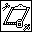

You can copy and paste objects in two ways. You can select an object and select Edit»Copy and Edit»Paste, or you can clone the object.
Complete the following steps to clone an object.
(Linux) You also can clone objects by clicking the object with the middle mouse button and dragging the object to a new location.
When you clone or copy objects that have labels, LabVIEW copies the name of the original object and appends a number.
|
Note If you copy the object to another VI, you also copy the description. You might need to change the description for the new object. |
When you clone or you copy a block diagram terminal, a new terminal appears on the block diagram. LabVIEW does not copy the local variables, control references, Property Nodes, and Invoke Nodes of the original terminal.
If you copy and paste a local variable or control reference, LabVIEW also copies the terminal. If you clone a local variable or control reference, LabVIEW creates a new reference to the original terminal.
When you copy front panel controls from the block diagram and paste them onto the block diagram of a new VI, the front panel placement differs from that of the original VI. LabVIEW places the front panel objects in the upper left corner to avoid overlapping or appearing in a non-visible region.
If you copy and paste an implicitly linked Property Node or Invoke Node, LabVIEW disconnects the node from the terminal. If you clone an implicitly linked node, LabVIEW creates a new implicitly linked node. If you clone the node by dragging it to a new VI, LabVIEW disconnects the node from the terminal. You can relink the node to the terminal.
You can copy selected objects between VIs by dragging them from one VI and placing them on another VI.
|
Note If you copy a subVI, the Clipboard  appears in the VI Hierarchy window. Note that a subVI you copy might remain in memory in the Clipboard when you do not expect a VI to be in memory. |